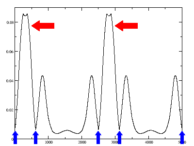
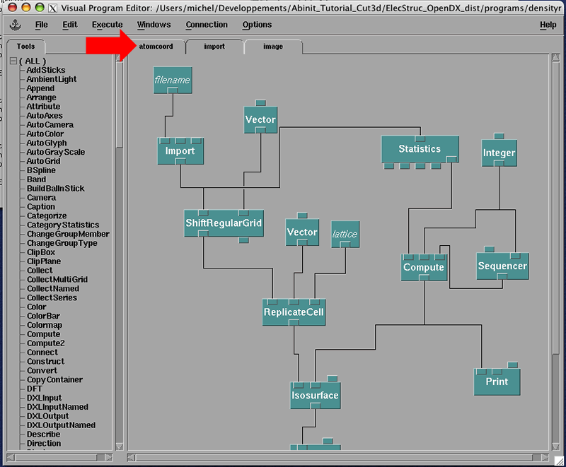
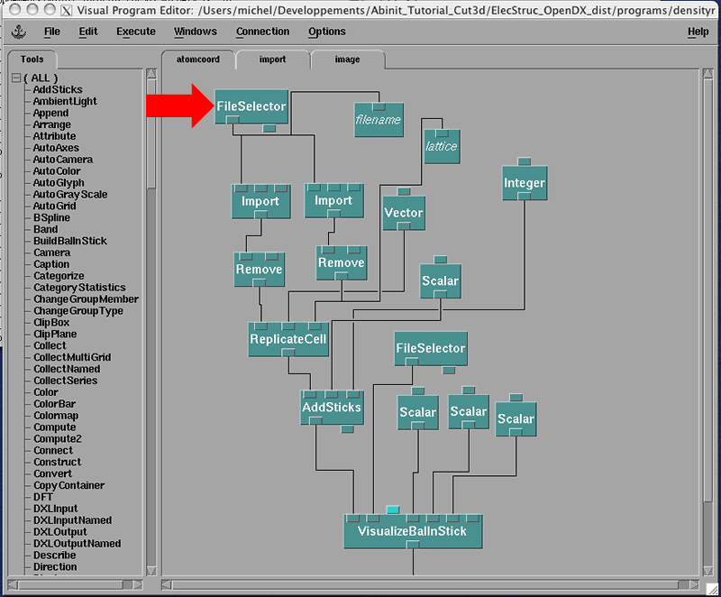
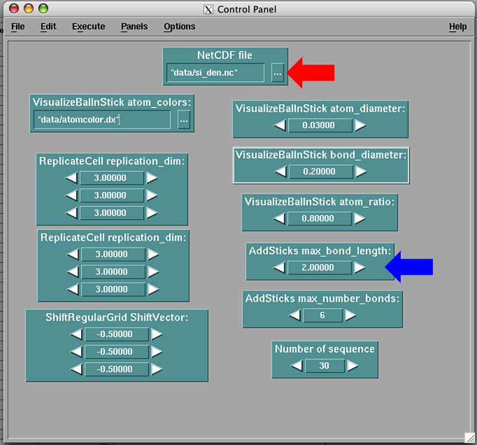
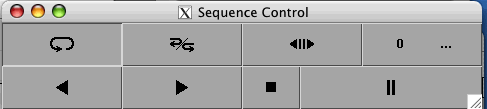
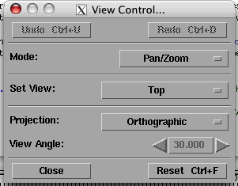

This lesson covers some of the features available in the program cut3d and how to use other programs (not distributed with the Abinit package) to treat them. The help file on this program can be view at cut3d_help.
The cut3d program can produce output that can be read by several other programs. At present, the supported programs are:
All these software are freely available. XCrySDen and Molekel are complete applications designed to display electronic structure data. It should be easy to learn how to use them and to have a quick look at your data. OpenDX is a more general tool to visualize data. It is object oriented and let you "code" the image you want to display. It is a bit harder to master but once you know how to use it, it is a powerful tool. Over the years, we have developped a series of macros and modules to treat electronic structure data. This lesson will concentrate on how to use OpenDX to display Abinit's output.
The cut3d program can be used to treat data in a density file (_DEN), a potential file (_POT) or a wavefunction file (_WFK). In this lesson will we see how to use this program to:
This lesson should take about 1 hours to be done.
We will first start by a simple example: viewing Silicon density information. Before using the cut3d program, we first have to generate the density and the wavefunctions files by running the Abinit program. For this simple case, we will use the last input file used in lesson 3 (t35.in). That input file contains two datasets, one to obtain a self-consistent density and the other to obtain a selected number of k-point wavefunctions. If you do not have the output of this case, you will need to rerun it, at this stage, this should be fairly easy for you!
The output files that are of interest for us now are:
t35o_DS1_DEN t35o_DS1_WFK t35o_DS2_WFK
NOTE: To ask Abinit to output the density, you have to set the input parameter "prtden 1" in the input file as it was done in the first dataset in this example.
NOTE: In DS1, the self-consistent dataset, we have a good density (file: t35o_DS1_DEN) which is physically relevant. Careful, if you run a non-self-consistent job, you may obtain a density but it will not be physical!
NOTE: The wavefunctions in DS1 (file: t35o_DS1_WFK) are those of the Monkhorst and Pack grid which are good for self-consistent calculations but often not really inspiring physically. For this reason, we often have to do a non-self-consistent run to get relevant wavefunctions as it is done in this case. The DS2 (file: t35o_DS2_WFK) contains the interesting wavefunctions that we want to analyse.
Now we are ready to use the cut3d program. First we must make sure that we have compiled the program. If you have run the command "make" in the Abinit main directory, and everything went well, then you have obtained the abinis program and all the accompanying program, in particular cut3d. You can obtain only the cut3d program by issuing the command "make cut3d" in the Abinit main directory.
Assuming that we are in the directory Tutorial/Work_tools, and the cut3d program can be accessed by simply typing its name, now write the command:
promp% cut3d
The cut3d program will ask you several questions in order to determine what you want him to do. In this lesson, the text coming from the cut3d program are in black and the input that you have to type in are in red.
After some text about the version and the licence, you will see the question:
What is the name of the 3D function (density, potential or wavef) file ?
You can enter the density file:
t35o_DS1_DEN
You will then see:
=> Your 3D function file is : t35o_DS1_DEN Does this file contain formatted 3D ASCII data (=0) or unformatted binary header + 3D data (=1) ?
Your answer is 1 as generally all output of Abinit are in unformatted binary form. After you have pressed enter, cut3d prints out a lot of information contained in this file that explain how that density was obtained. At this point, you can double check that this is really the file that you want to analyse. Then you will have the choices:
What is your choice ? Type: 1 => point (interpolation of data for a single point) 2 => line (interpolation of data along a line) 3 => plane (interpolation of data in a plane) 4 => volume (interpolation of data in a volume) 5 => 3D formatted data (output the bare 3D data - one column) 6 => 3D indexed data (bare 3D data, preceeded by 3D index) 7 => 3D Molekel formatted data 8 => 3D data with coordinates (tecplot ASCII format) 9 => output .xsf file for XCrysDen 10 => output .dx file for OpenDx 11 => compute atomic charge using the Hirshfeld method 12 => NetCDF file 13 => exit
As you can see, there are many options available! At the moment, we will do something simple which is getting the density along a given line.
Choose option 2. You will be given the following choices:
Type 1) for a line between two cartesian-defined points or 2) for a line between two crystallographic-defined points or 3) for a line defined by its direction
Select option 1. You will get the message:
Type the first point coordinates (Bohrs): -> X-dir Y-dir Z-dir:
We will ask for the density along the [111] direction starting from the origin and extending to two unit cell. For the first point, enter 0 0 0. You will get the message:
Type the second point coordinates (Bohrs): -> X-dir Y-dir Z-dir:
Looking at the input file, we see that the cubic side has a length of 10.217 bohr. To get 2 unit cells, you will enter 20.434 20.434 20.434. You will then be asked for the line resolution.
Enter line resolution:
This is how many points are calculated for the line. Typically, you should enter a large number, say 5000. You will then be asked for the file name.
Enter the name of an output file:
Enter something meaningful, si_den_111.dat.
More analysis of the 3D file ? (1=default=yes,2=no)
Enter 2 to finish with cut3d. If you do a list of the files in your working directory, you should see the "si_den_111.dat" file. You can look at this file, you will see that this is a simple two columns file. You can visualize it with your favorite plotting software (ex: xmgrace, gnuplot, ...). If you open this file with xmgrace, you will obtain the following graph:

We can learn quite a lot from this graph. Looking at the input file, we see that we have a silicon atom at the origin and another 1/4 along the diagonal. We note also that there is almost no density at the origin. By doing the line in the [111] direction, we have crossed the first silicon-silicon bond which we can see as a large density peak indicated by the red arrows.
By the way, cut3d works with the so-called "trilinear" interpolation of the density. That is, the FFT grid, on which the density is defined, in real space, leads to a partitioning of the space in small rectangular parallelipipeds, and in each such parallelipiped, the eight values of the density on the corner are used to define an interpolation that is linear in each the dimensions of the cube. More explicitely, let us chose one of the corner as origin, and define reduced coordinates, varying from 0 to 1 inside the parallelipiped, the density inside the parallelipiped is given by
density(dx,dy,dz)=density(0,0,0)+ c100 * dx + c010 * dy + c001 * dz + c110 * dx * dy + c101 * dx * dz + c011 * dy * dz + c111 * dx * dy * dzwhere the 7 coefficients c100, c010, c001, c110, c101, c011, c111 are to be determined from the knowledge of the density at the 7 other corners.
This trilinear interpolation guarantees that the overall function of space is continuous, but do not guarantee that the derivatives change continuously. This is seen in the above figure, as the two abrupt changes of slopes, close to the maximum. These are completely spurious features, that can be avoided is a finer FFT grid is used to determine the density. Actually, the density profile along the bond, with a fine FFT grid, behave quite smoothly, and reach its maximum at the mid point between the two atoms, in contrast to the figure presented previously.
NOTE: An important point to remember when doing visualization of density obtained with a pseudopotential calculation is that the core charge is not included! This is the reason why we use pseudopotential and the charge we get is only the valence charge. It is possible to include some of the core charge by doing calculations using pseudos with partial core charge. The fact that the core charge is missing means that there is no charge at the nucleus of our atoms. This means that we are getting low density at the nucleus center and we have to remember that this is not a physical effect! The location of the silicon atoms have been indicating by blue arrows.
On the OpenDX web site, in the download section (www.opendx.org/download.html), you can obtain quite a few binaries for different platforms. For Linux, you can find the RPM package on the site http://rpmfind.net/ (Search for OpenDX). For Mac OS, the package is available with the Fink utility. Install the dx package and the dx-samples package.
There are a number of tutorials on the web where you can get introduce to OpenDX. Do a Google search with "OpenDX tutorial" and you will find quite a few. If you find one particularly useful, let us know so that we can indicate it here for future users.
The modules and macros that we have developped for electronic structure calculations are not part of the Abinit package as they can be use by other program. We have provided a version of these modules and macros with this lesson, see the file ElecStruc_OpenDX_dist.tar.gz. You may want to check my web page for example programs.
Gunzip and untar this file. In the README file, you will find all the information on how to compile the modules.
Before we can use the OpenDX software, we have to use cut3d to get the data in a form so that OpenDX will understand it. We have implemented an option in cut3d to write the charge density in NetCDF format which has the advantage to be compact and fast to access as well as being portable to any architecture.
Rerun the cut3d program as in section 2 but now choose option 12 to produce a NetCDF file of the charge density. Cut3d will ask you for the name of the file you want, enter si_den. You will have the possibility to add a title to this NetCDF file. Then, quit the cut3d program.
In the main directory of the ElecStruc_OpenDX_dist, start OpenDX with the command:
prompt% ./dxstart
If everything goes well, you should see this window:

You have in front of you an OpenDX Visual Program. In OpenDX, you have to program the image you want to see. Fortunately, OpendDX is fully object oriented and with a couple of examples, you will be able to explore the possibilities of OpenDX.
A Visual Program in OpenDX can be divided in many sections as is this one. The different sections can be accessed by the tabs on top. Press on the 'atomcoord' tab marked by a red arrow in the above figure. You will see a different section of this Visual Program:

We now have to edit this Visual Program to access our silicon charge density. Double clic on the 'FileSelector' box marked by the red arrow. You will see the Control Panel with all the parameters that you can set.

Now you can press on the '...' next to the red arrow and move through the files to select the 'si_den.nc' file that we have created above. It turns out that this package is sent with the same file and it is located in the 'data' directory given. In general, you will put your own file there.
Now, go to the 'Execute' menu and select 'Execute once', you should see a 3x3x3 supercell of Silicon atoms, e.g. a lot of green spheres (Everyone knows that Silicon is green!). You will not see bonds on this figure. To see the bonds, go to the box on the Control Panel window where you can set the variable 'max_band_length', marked by a blue arrow and set it to 3. The unit is in Angstroms. Go to the 'Execute' menu and 'Execute once' again. The bonds should appear.
Now, on the 'import' tab of the Visual Program, the first window that appeared, locate the box 'Sequencer' and double clic on it. You will see the following window:

Press on the Play button (triangle) and watch the 'Image' window. You can stop the animation by pressing the Stop button (square).
With the animation stopped, press the 'Options' menu of the 'Image' window and select 'View control ...'. You will see this window appear:

In the Mode selector, choose 'Rotate'. Now with the mouse over the image, you will be able to rotate the image. You can select the 'Execute on change' in the 'Execute' menu to see the image rotates in real time, if your processor is fast enough to follow your motion!
You can play with this Visual Program and learn more how to use the OpenDX softwave. In the next section, we will see how to visualize wavefunctions produced by Abinit.
The first thing to do is to get the data from the WFK file with cut3d. Start cut3d as before but this time enter the wavefunction file of the second dataset (t35o_DS2_WFK). Answer all the questions and select k-point 11 and band 4, which is the Gamma point and the top valence state. Next, cut3d will ask you if you want an analysis of angular projection for that state:
Do you want the atomic analysis for this state : (kpt,band)= (11 4)? If yes, enter the radius of the atomic spheres, in bohr If no, enter 0
Go ahead and try it, choose a radius of 2 bohrs. Follow the analysis and you should see that this state is mostly of character p as it should!
Next, you will be given the choice of several options, select option 12 to produce a NetCDF file that you will be able to image in OpenDX. You will have to enter a file name, cut3d automatically add the the information about the k-point, band and spin to the file name and you will have the possibility to add a title to the NetCDF file.
In OpenDX, go to the 'File' menu and select 'Open program...'. You will have the option to save the program you were working on and then a window will appear where you will select another Visual Program. Select the 'wfkphase.net' Visual Program. The advance feature of this Visual Program is that it adds the Block phase to Abinit ouput.
Now you have the choice to run this program with the default values in which case you will see an image of the HOMO state of poly(para-phenylenevinylene) polymer, or in the 'Control Panel' select the file that you have just produce. You will have to adjust the parameters to contruct a nice image of the wavefunction.
A lot more can be said on how to use OpenDX with Abinit outputs. We hope that this brief introduction will have shown you some of the features available. Enjoy!